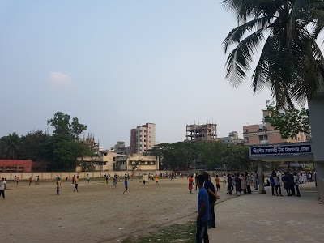

Adrito Mustafa
He compleated his PEC,JSC,SSC from Khilgaon Government High School(KGHS) and Compleated HSC from Rajarbagh Police Lines High school & College(RPLSC). He attend every public examinations from Dhaka board.Here is a table below. Which is about his passing year degree and grades.
| Degree | Passing Year | Board | Grade |
| SSC | 2016 | Dhaka | A |
| HSC | 2018 | Dhaka | A- |
